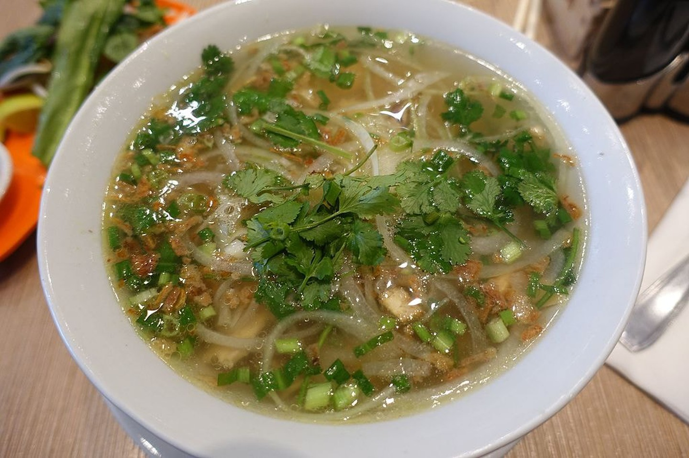

5 món ăn ngon nhất Việt Nam được báo Tây ví như "hương vị thiên đường"
Việt Nam luôn nằm trong top những thiên đường ẩm thực của thế giới. Chuyên trang du lịch The Culture Trip đã đưa ra danh sách 20 món ăn đáng thử nhất Việt Nam.
1. Mì Quảng

Món ăn này là đặc sản của tỉnh Quảng Nam nhưng được ưa chuộng trên khắp cả nước. Nguyên liệu gồm sợi mì, đậu phộng, bánh đa, thịt lợn quay và nước dùng có màu vàng của nghệ. Không ít du khách quốc tế khi được thưởng thức mì Quảng khi đến Việt Nam đã ca ngợi đây là món ăn hoàn hảo.
2. Phở
Mỗi ngày ở Việt Nam có hàng triệu bát phở được phục vụ. Đây luôn được coi là món ăn nổi tiếng nhất và hấp dẫn nhất của nền ẩm thực Việt trong mắt du khách quốc tế.
3. Gỏi cuốn

Đây là món ăn nhẹ hoàn hảo của Việt Nam, với các thành phần chính như tôm, miến, thịt lợn và rau xanh rất tốt cho sức khỏe được bọc trong lớp bánh tráng mỏng, dai.
4. Bò kho

Món ăn này được đặc biệt yêu thích vào bữa sáng hoặc trưa. Đầu bếp có thể thay thế thịt bò bằng bất kỳ loại thịt nào khác, ninh trong lửa nhỏ với nước mắm, đường và nước dừa tươi, cà rốt, hành tây và rau mùi. Cách ăn phổ biến nhất để thưởng thức món này là xé từng miếng bánh mì rồi nhúng vào phần nước sốt và ăn kèm với thịt hầm.
5. Bún chả

Bún chả là một đại diện của phong cách ẩm thực Hà Nội. Các thành phần chính gồm bún gạo, thịt lợn nướng, nước mắm và rất nhiều loại gia vị và rau thơm ăn kèm.
Không